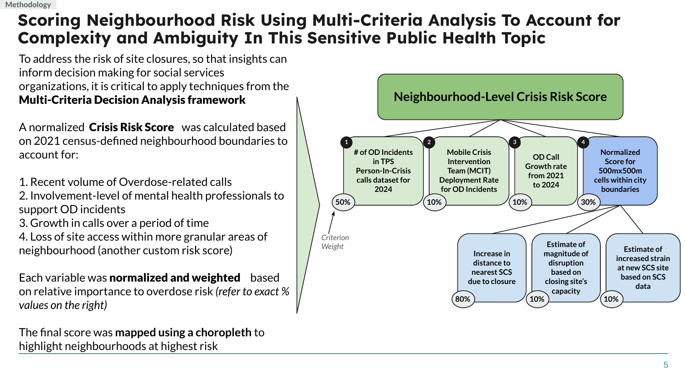
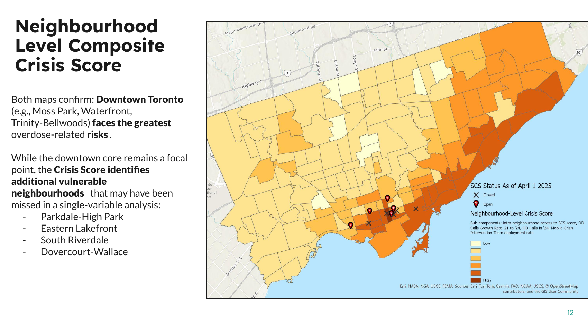

Spatial Analysis of Closure of Supervised Consumption Sites (SCS) in Toronto
In April 2025, a provincial policy closed five of Toronto's supervised consumption sites (SCS). This project maps who lost access to these harm-reduction services and where mobile outreach should go next, combining a multi-criteria Crisis Risk Score, network routing, and a fine-grained grid analysis. This analysis was conducted immediately after the closures.
Key Highlights


Client travel before vs. after the closures (network animation)